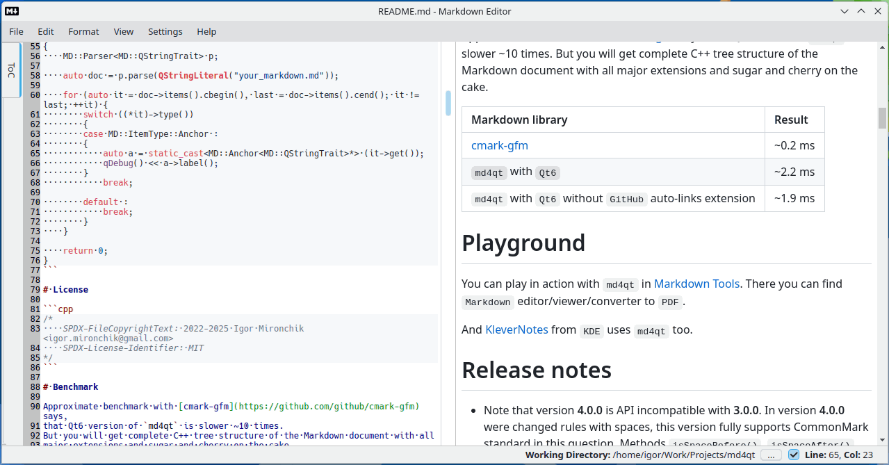
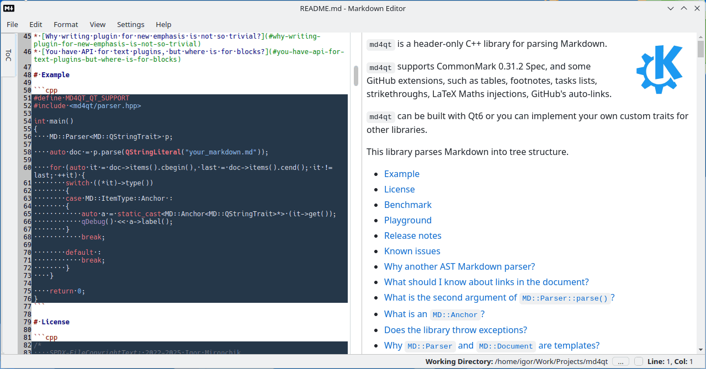

-

You can scroll Web preview to corresponding line from context menu in left side panel with ToC or from context menu of line number area.
-
You can scroll editor to corresponding heading by clicking item in left side panel with ToC.
-
You can load all linked Markdown files recursively and see a full Web preview of all of them at place.
-
You can choose working directory for the current Markdown document to process images and recursive links from that directory.
-
This editor and converter can handle RTL and LTR languages.
-
You can setup and opt in additional style plugins for Markdown processing, like subscript, superscript, marking of text. This feature implemented both in editor and converter to PDF.
-

You can generate GitHub flavoured ToC in Markdown in one click from menu.
-
Spell checking can be configured to handle more than one language in the Markdown document.
-

You can find a text both in editor and in Web preview.
-
You can use this editor like Web browser only for Markdown documents (preview mode).
-
Editor can be a little bit smart to auto continue list and fenced code blocks on Return key press, like on GitHub, but even better. Have a look at Settings->Editor->Auto formatting settings.
-

Fenced code blocks may be highlighted with corresponding syntax in editor. Look at Settings->Colors settings.
-
Links in editor can be clicked with "Control" key for navigation.
-
Maybe the author did forget something?
Thanks for using.
Enjoy.